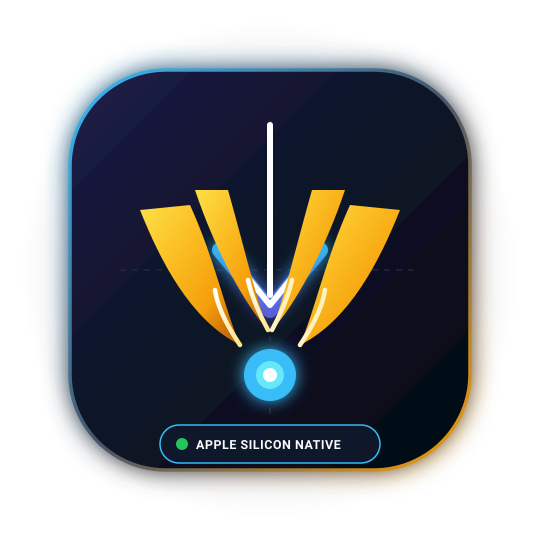

Universal Media Stream Extractor Plugin for Grabbit
Unlock seamless 4K/8K media stream extraction across 2,000+ supported platforms natively inside Grabbit's accelerated multi-thread download engine.

Installation Guide
Get Grabbit
Download and install Grabbit from https://grabbit.fyi. Enable the Pro license to unlock community plugins.
Drop the Plugin
Download talons.gda. In Grabbit, open Settings (⌘,) → Plugins →
click "Install Plugin from File..." and select talons.gda.
Paste & Grab
Paste any video or audio stream URL into Grabbit. Talons automatically parses the highest available resolution and downloads it using Grabbit’s parallel connections.
Capabilities
Direct Upstream Sync
Always aligned with the latest yt-dlp core.
Lossless Audio Extraction
Extract direct M4A, AAC, or MP3 with metadata preservation.
Hardware-Accelerated Containers
Native MP4/MKV packaging.
100% Zero Bloat
Pure open-source Python hooks; zero analytics, telemetry, or bundled binaries.
Built by the Community for Grabbit
"The perfect companion plugin for high-bitrate video workflows."
View on GitHub